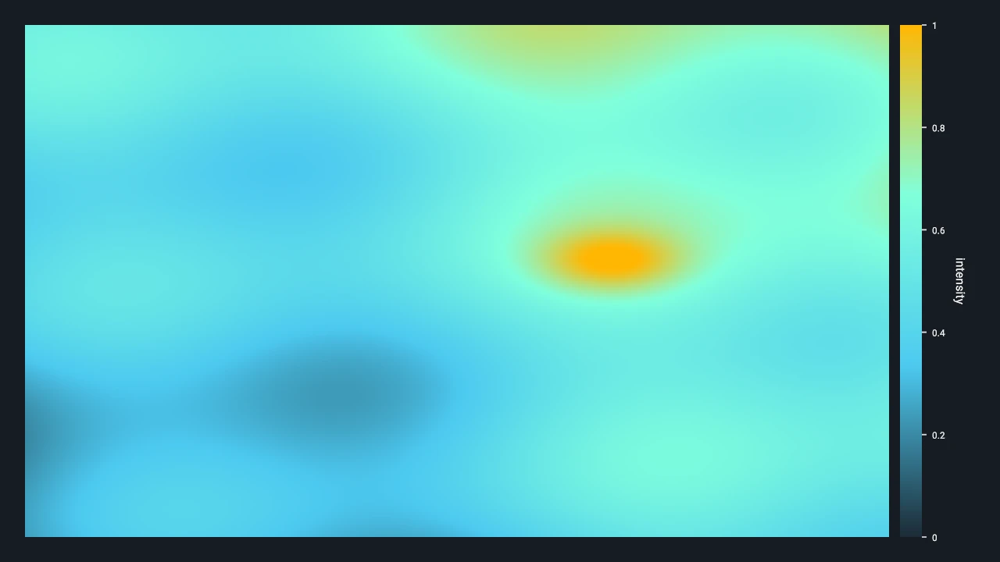

Scales and Colormaps¶
Scales give numeric or categorical data a shared semantic meaning. Colormaps turn normalized
continuous values into RGBA colors. Use the same retained DvzScale for a visual, its colorbar or
legend, and any probe formatting that explains that visual.
This page is the exact data contract. For a task-oriented walkthrough, see Map scalar values with colormaps.

Choose The Encoding¶
| Input | Scale | Color source | Adornment |
|---|---|---|---|
| Continuous scalar values | DVZ_SCALE_CONTINUOUS |
Built-in, custom LUT, or custom stops | Colorbar |
| Category identifiers | DVZ_SCALE_CATEGORICAL |
Explicit DvzScaleCategory table |
Legend |
| Already encoded display colors | No scale required | RGBA8 attribute or field | Usually none |
Do not use a continuous colormap for unordered category identifiers. Do not add a numeric colorbar to arbitrary RGBA colors: without a scale domain, the colors do not define a reversible numeric encoding.
Continuous Scale Contract¶
A continuous DvzScale stores the semantic domain, an optional visible range, formatting policy,
and an optional colormap binding.
| State | Meaning | Rules |
|---|---|---|
Domain [min, max] |
Full semantic range represented by the scale. | Both values must be finite and max > min. |
View range [min, max] |
Current displayed subrange. | Optional; when set, scalar image and colorbar mapping use it ahead of the domain. |
| Colormap | Mapping from normalized t to RGBA8. |
Required by current scalar image and volume colorization routes. |
| Format | Shared labels, precision, units, and related display policy. | Use the same policy for axes, colorbars, and readouts that describe the scale. |
The active linear normalization is:
t = (value - min) / (max - min)
Colormap sampling clamps finite values below the range to t = 0 and values above it to t = 1.
Logarithmic, symmetric-log, quantile, power, and explicit under/over/bad-color policies are not
documented v0.4 scale modes. Transform or classify such data before upload, and make the displayed
labels describe that transformation.
There is no general missing-value or mask contract for scalar color mapping. Remove, split, mask,
or replace NaN and infinite values before upload according to the visual family's data model.
Never rely on an incidental backend color for non-finite values.
Built-In Colormaps¶
DvzBuiltinColormap contains the built-in continuous ramps supported by the v0.4 scene API:
| Selector | Typical use |
|---|---|
DVZ_BUILTIN_COLORMAP_VIRIDIS |
General sequential data; perceptually ordered default choice. |
DVZ_BUILTIN_COLORMAP_MAGMA |
Dark-background sequential data. |
DVZ_BUILTIN_COLORMAP_PLASMA |
High-chroma sequential data. |
DVZ_BUILTIN_COLORMAP_INFERNO |
Dark-to-light sequential data with strong luminance range. |
DVZ_BUILTIN_COLORMAP_CIVIDIS |
Sequential data where color-vision accessibility is a priority. |
DVZ_BUILTIN_COLORMAP_TURBO |
High-chroma rainbow-like display; use only when its nonuniform emphasis is acceptable. |
DVZ_BUILTIN_COLORMAP_GRAY |
Monochrome intensity. |
DVZ_BUILTIN_COLORMAP_NONE |
No built-in ramp; sampling falls back to grayscale unless custom data is installed. |
Create one with:
colormap = dvz.dvz_colormap_builtin(scene, dvz.DVZ_BUILTIN_COLORMAP_VIRIDIS)
DvzColormap* colormap =
dvz_colormap_builtin(scene, DVZ_BUILTIN_COLORMAP_VIRIDIS);
Built-ins are compact retained stop tables, not the legacy 256×256 atlas exposed by earlier Datoviz releases. Their enum names and rendered behavior are the public contract; internal storage and interpolation tables are not.
Custom Colormaps¶
There are two custom routes.
Uniform Lookup Table¶
dvz_colormap_custom() copies at least two RGBA8 colors and distributes them uniformly over
[0, 1]. Sampling linearly interpolates neighboring RGBA8 entries.
const DvzColor colors[] = {
{20, 24, 35, 255},
{32, 180, 170, 255},
{245, 225, 120, 255},
};
DvzColormap* colormap =
dvz_colormap_custom(scene, "graphite-cyan", colors, DVZ_ARRAY_COUNT(colors));
Positioned Stops¶
dvz_colormap_set_stops() copies up to DVZ_SCENE_MAX_COLOR_STOPS entries. Stop positions are
normalized coordinates. Supply them in increasing order and normally include endpoints at 0 and
1; sampling interpolates between adjacent stops and clamps outside their interval.
DvzColormap* colormap = dvz_colormap(scene, NULL);
DvzColormapStop stops[] = {
{.position = 0.0, .rgba = {20, 24, 35, 255}},
{.position = 0.5, .rgba = {32, 180, 170, 255}},
{.position = 1.0, .rgba = {245, 225, 120, 255}},
};
dvz_colormap_set_stops(colormap, stops, DVZ_ARRAY_COUNT(stops));
Passing zero stops clears the custom stops and restores the object's built-in or grayscale policy.
Calling dvz_colormap_set_stops() on a LUT colormap releases its copied LUT.
dvz_colormap_set_center() retains a semantic diverging center, but the current linear scalar
normalization does not by itself create a two-slope normalization around that center. If exact
centered normalization matters, transform values explicitly and test the resulting mapping.
Categorical Scale Contract¶
A categorical scale stores explicit DvzScaleCategory rows:
| Field | Type | Meaning |
|---|---|---|
category_id |
DvzCategoryId |
Stable signed category identity; it is not an array index. |
order |
uint32_t |
Display ordering metadata. |
label |
const char* |
Optional label copied into scale-owned storage. |
color |
DvzColor |
RGBA8 display color. |
flags |
uint32_t |
Reserved category metadata; use 0 unless a documented flag applies. |
dvz_scale_set_categories() replaces the table and rejects duplicate identifiers.
dvz_scale_update_categories() replaces matching identifiers in place and appends new ones.
dvz_scale_remove_categories() ignores identifiers that are not present. Passing no explicit
entries restores the categorical palette-index fallback.
Labels returned through dvz_scale_category() point to scale-owned storage. They remain valid only
until the categories change or the scale is destroyed.
Bind Once, Reuse Everywhere¶
The retained relationship should be:
scalar/category data -> DvzScale -> visual
|-----> colorbar or legend
`-----> probe and label formatting
Bind a color scale to the supported visual slot:
dvz_visual_set_scale(visual, "color", scale);
Point and pixel visuals accept scalar float color attributes after
dvz_visual_set_attr_format(..., "color", DVZ_VISUAL_ATTR_FORMAT_SCALAR_F32). Scalar image and
volume fields require a compatible field semantic plus a continuous scale with a colormap. Labels
use categorical scales. Consult the individual visual-family pages
before assuming another family supports scalar or categorical color.
Scale and colormap changes invalidate their retained consumers. Update the shared object instead of rebuilding independent color arrays, colorbars, legends, and readout rules.
Color Representation¶
DvzColor is four packed uint8 channels in RGBA order. It represents display-encoded sRGB color
with straight alpha. Colormap interpolation currently occurs between these RGBA8 channel values.
Screenshot and video capture also produce sRGB RGBA8 pixels with straight alpha; those outputs are
display artifacts, not linear scientific measurements.
Ownership And Errors¶
- Scales and colormaps are created in a
DvzSceneand must only be bound to consumers from that same scene. - Their retained tables and LUT inputs are copied. Caller arrays may be released after a successful setter returns.
- Explicit
dvz_scale_destroy()anddvz_colormap_destroy()exist. Otherwise destroy the scene only after dependent apps/views have stopped. - Constructors return
NULLon validation or allocation failure. Setters returnDVZ_OKorDVZ_ERROR; check results in production code. - A colorbar requires a continuous scale. A legend requires a categorical scale.
Related Reference¶
- Visual attributes
- Coordinate systems
- Objects and lifetimes
- Visuals and composites C API
- Map scalar values with colormaps
- Add colorbars, scale bars, and legends
Complete examples
- Scalar Color Scale — point scalar colors and a shared colorbar.
- Image — scalar sampled field and custom stops.
- Categorical Legend — explicit category table and legend.